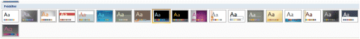
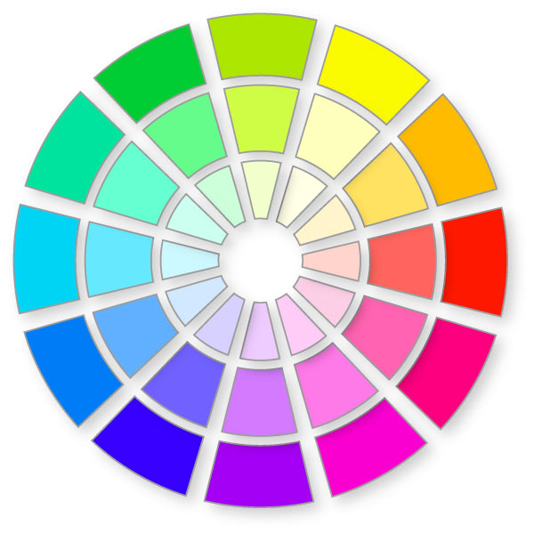
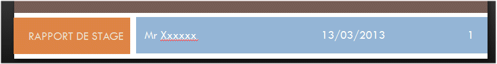
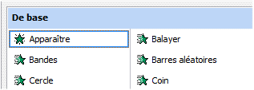
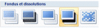
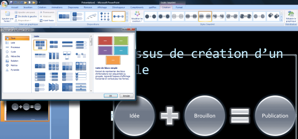
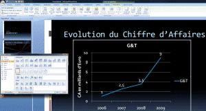

<html>
	
<head>
	<title>Conseils</title>
	<meta http-equiv="Content-Type" content="text/html; charset=UTF-8">
    <meta name="generator" content="HelpNDoc Personal Edition 4.9.2.132">
	<meta name="keywords" content="">
	
	<link type="text/css" rel="stylesheet" media="all" href="css/reset.css" />
	<link type="text/css" rel="stylesheet" media="all" href="css/base.css" />
	<link type="text/css" rel="stylesheet" media="all" href="css/hnd.css" />
	<!--[if lte IE 8]>
		<link type="text/css" rel="stylesheet" media="all" href="css/ielte8.css" />
	<![endif]-->
	<style type="text/css">
		#topic_header
		{
			background-color: #808080;
		}
	</style>
	<script type="text/javascript" src="js/jquery.min.js"></script>
	<script type="text/javascript" src="js/hnd.js"></script>
	<script type="text/javascript">
		$(document).ready(function()
		{
			if (top.frames.length == 0)
			{
				var sTopicUrl = top.location.href.substring(top.location.href.lastIndexOf("/") + 1, top.location.href.length);
				top.location.href = "index.html?" + sTopicUrl;
			}
			else
			{
				var bTocSelected = false;
				(function waitForTOC()
				{
					if (top && top.FrameTOC && top.FrameTOC.SelectTocItem)
					{
						top.FrameTOC.SelectTocItem("Conseils");
						bTocSelected = true;
					}
					if (!bTocSelected) setTimeout(function() { waitForTOC(); }, 300);
				})();
			}
		});
	</script>
	
	</head>

<body>

<div id="topic_header">
			<div id="topic_header_content">
				<h1 id="topic_header_text">Conseils</h1>
				
				</div>
			<div id="topic_header_nav">
				<a href="Introduction.html"></a>
				
				<a href="Unautreoutil.html"></a>
				
				</div>
			<div class="clear"></div>
		</div>
	<div id="topic_content">
		
<p></p>
<p class="rvps2"></p>
<p class="rvps11"><span class="rvts19">La règle des 2 minutes par diapo</span></p>
<p class="rvps2"><span class="rvts15"><br/></span></p>
<p class="rvps2"><span class="rvts14"> &nbsp;</span><span class="rvts13"> Nbre de diapos = Temps de l'exposé / 2 minutes &nbsp; &nbsp; &nbsp; &nbsp; &nbsp; &nbsp; &nbsp; &nbsp; &nbsp;Ex.: 10 diapositives maximum pour 20 minutes d'exposé</span></p>
<p class="rvps2"><span class="rvts14"> </span></p>
<p class="rvps12"><span class="rvts13"><br/></span></p>
<p class="rvps11"><span class="rvts19"> Les trois règles de l’esthétisme</span></p>
<p class="rvps2"><span class="rvts15"><br/></span></p>
<p class="rvps2"><span class="rvts14"> </span><span class="rvts17">Homogénéité</span></p>
<p class="rvps2"><span class="rvts14"></span><span class="rvts14"> &nbsp; &nbsp; &nbsp; &nbsp;</span><span class="rvts14"> </span><span class="rvts13">Les diapositives doivent se ressembler (fond)</span><span class="rvts13"> </span></p>
<p class="rvps2"><span class="rvts13"> &nbsp; &nbsp; &nbsp; &nbsp; &nbsp; &nbsp;</span></p>
<p class="rvps2"><span class="rvts14"></span><span class="rvts14"> &nbsp; &nbsp; &nbsp; &nbsp;</span><span class="rvts14"> </span><span class="rvts13">Les « phrases » doivent avoir la même structure</span></p>
<p class="rvps2"><span class="rvts14"><br/></span></p>
<p class="rvps2"><span class="rvts14"> </span><span class="rvts17">Parcimonie</span></p>
<p class="rvps2"><span class="rvts14"> </span><span class="rvts14"> &nbsp; &nbsp; &nbsp; &nbsp;</span><span class="rvts13">Trop de mots : pire que pas assez.</span></p>
<p class="rvps2"><span class="rvts14"> </span><span class="rvts14"> &nbsp; &nbsp; &nbsp; &nbsp;</span><span class="rvts13">Règle du 36 : 6 mots par ligne, 6 lignes</span></p>
<p class="rvps2"><span class="rvts14"><br/></span></p>
<p class="rvps2"><span class="rvts14"> </span><span class="rvts17">Mouvement</span></p>
<p class="rvps2"><span class="rvts14"> </span><span class="rvts14"> &nbsp; &nbsp; &nbsp; &nbsp;</span><span class="rvts13">Le sens de lecture de la diapositive doit être facile à détecter</span></p>
<p class="rvps2"><span class="rvts13"><br/></span></p>
<p class="rvps11"><span class="rvts19"> Les quatre règles du texte</span></p>
<p class="rvps2"><span class="rvts19"><br/></span></p>
<div class="rvps2"><table width="100%" border="1" style="border-width: 0px; border-spacing: 2px;">
<tr valign="top">
<td style="border-width : 1px; border-color: #000000; border-style: solid; padding: 1px; width: 451px;"><p class="rvps8"><span class="rvts17">Police de caractère</span></p>
<p class="rvps8"><span class="rvts14"></span><span class="rvts14"> &nbsp; &nbsp; &nbsp; &nbsp;</span><span class="rvts13">Pour les textes : sans empattements</span></p>
<p class="rvps8"><span class="rvts13"> &nbsp; &nbsp; &nbsp; &nbsp; &nbsp; &nbsp;</span></p>
<p class="rvps8"><span class="rvts13">Exemple : </span></p>
<p class="rvps16"><span class="rvts42">Arial &nbsp; &nbsp;</span><span class="rvts46">Tahoma</span><span class="rvts42"> &nbsp; &nbsp;</span><span class="rvts45">Times New Roman </span></p>
<p class="rvps16"><span class="rvts42"> &nbsp; &nbsp; &nbsp;</span></p>
<p class="rvps16"><span class="rvts44"> &nbsp;Brushscript &nbsp;</span><span class="rvts42"> &nbsp; &nbsp;</span><span class="rvts43">Juice</span><span class="rvts42"> &nbsp; &nbsp; ?</span></p>
<p class="rvps16"><span class="rvts13"><br/></span></p>
<p class="rvps16"><span class="rvts13"> &nbsp; &nbsp; &nbsp;</span></p>
<p class="rvps16"><span class="rvts13"> &nbsp; </span><span class="rvts41">Outright Televism &nbsp; &nbsp; &nbsp; </span><span class="rvts42">?</span></p>
<p class="rvps16"><span class="rvts41"><br/></span></p>
<p class="rvps8"><span class="rvts14"> </span><span class="rvts14"> &nbsp; &nbsp; &nbsp; &nbsp;</span><span class="rvts13">Pas plus de 2 polices sur une même diapositive</span></p>
<p class="rvps8"><span class="rvts13"><br/></span></p>
<p class="rvps8"><span class="rvts13"><br/></span></p>
</td>
<td style="border-width : 1px; border-color: #000000; border-style: solid; padding: 1px; width: 460px;"><p class="rvps2"><span class="rvts17">Taille</span></p>
<p class="rvps2"><span class="rvts14"> </span><span class="rvts14"> &nbsp; &nbsp; &nbsp; &nbsp;</span><span class="rvts14">- </span><span class="rvts13">Choisir des tailles 32 à 44 pour les titres</span></p>
<p class="rvps2"><span class="rvts13"> &nbsp; &nbsp; &nbsp; &nbsp; &nbsp; &nbsp; &nbsp; </span><span class="rvts26">Lisible</span><span class="rvts13"> &nbsp; &nbsp;</span><span class="rvts27">Lisible</span></p>
<p class="rvps2"><span class="rvts13"> &nbsp; &nbsp; &nbsp; &nbsp; &nbsp; &nbsp; &nbsp; &nbsp; &nbsp; &nbsp; &nbsp; &nbsp; &nbsp; </span><span class="rvts26">32</span><span class="rvts13"> &nbsp; &nbsp; &nbsp; &nbsp; &nbsp; &nbsp; &nbsp; &nbsp; &nbsp; &nbsp; &nbsp; &nbsp;</span><span class="rvts27">44</span><span class="rvts13"> </span></p>
<p class="rvps2"><span class="rvts13"><br/></span></p>
<p class="rvps2"><span class="rvts14"> </span><span class="rvts14"> &nbsp; &nbsp; &nbsp; &nbsp;</span><span class="rvts14">- </span><span class="rvts13">Choisir des tailles 18 à 28 pour les textes</span></p>
<p class="rvps2"><span class="rvts28"> &nbsp; &nbsp; &nbsp; &nbsp; &nbsp;</span><span class="rvts31">Lisible</span><span class="rvts13"> &nbsp;</span><span class="rvts32">Lisible</span><span class="rvts13"> &nbsp; &nbsp; </span><span class="rvts29">Lisible</span><span class="rvts13"> &nbsp; &nbsp; &nbsp;</span><span class="rvts30">Lisible</span><span class="rvts13"> </span></p>
<p class="rvps2"><span class="rvts13"> &nbsp; &nbsp; &nbsp; &nbsp; &nbsp; &nbsp; </span><span class="rvts28">10</span><span class="rvts13"> &nbsp; &nbsp; &nbsp; 12 &nbsp; &nbsp; &nbsp; &nbsp; &nbsp; &nbsp; </span><span class="rvts29">18</span><span class="rvts13"> &nbsp; &nbsp; &nbsp; &nbsp; &nbsp; &nbsp; &nbsp; &nbsp; &nbsp; </span><span class="rvts30">28</span><span class="rvts13"> </span></p>
</td>
</tr>
<tr valign="top">
<td style="border-width : 1px; border-color: #000000; border-style: solid; padding: 1px; width: 451px;"><p class="rvps2"><span class="rvts17">Minuscule</span></p>
<p class="rvps2"><span class="rvts14"> </span><span class="rvts14"> &nbsp; &nbsp; &nbsp; &nbsp;</span><span class="rvts13">Les minuscules sont plus lisibles que les majuscules</span></p>
<p class="rvps7"><span class="rvts13"> &nbsp; &nbsp; &nbsp; &nbsp;Exemple : Philosophie - PHILOSOPHIE</span></p>
</td>
<td style="border-width : 1px; border-color: #000000; border-style: solid; padding: 1px; width: 460px;"><p class="rvps8"><span class="rvts17">Forme</span></p>
<p class="rvps8"><span class="rvts17"><br/></span></p>
<p class="rvps8"><span class="rvts14"></span><span class="rvts14"> &nbsp; &nbsp; &nbsp; &nbsp;</span><span class="rvts13">Les styles </span><span class="rvts17">Gras</span><span class="rvts13">, </span><span class="rvts16">Italique</span><span class="rvts13">, </span><span class="rvts18">Souligné</span><span class="rvts13">, ou Ombré doivent &nbsp; &nbsp; &nbsp; &nbsp; &nbsp; &nbsp; être utilisés avec discernement</span></p>
<p class="rvps8"><span class="rvts14"> </span><span class="rvts14"> &nbsp; &nbsp; &nbsp; &nbsp;</span><span class="rvts13">Les styles doivent être utilisés sur des mots et non sur &nbsp; &nbsp; &nbsp; &nbsp; &nbsp; &nbsp; des phrases</span></p>
<p class="rvps8"><span class="rvts14"> </span><span class="rvts14"> &nbsp; &nbsp; &nbsp; &nbsp;</span><span class="rvts13">Plusieurs styles se marient mal sur une même ligne.</span><span class="rvts42"> &nbsp;</span></p>
<p class="rvps8"><span class="rvts13"><br/></span></p>
</td>
</tr>
</table>
</div>
<p class="rvps2"><span class="rvts14"> </span></p>
<p class="rvps11"><span class="rvts19"> Les règles des jeux de couleurs</span></p>
<div class="rvps2"><table width="100%" border="0" style="border-width: 0px; border-spacing: 2px;">
<tr valign="top">
<td style="padding: 1px; width: 480px; height: 41px;"><p class="rvps2"><span class="rvts22"><br/></span></p>
<p class="rvps9"><span class="rvts20"> </span><span class="rvts21">Mariage des couleurs de textes et de fond</span></p>
<p class="rvps9"><span class="rvts20"><br/></span></p>
</td>
<td rowspan="4" style="padding: 1px; width: 364px; height: 43px;"><p class="rvps3"></p>
</td>
</tr>
<tr valign="top">
<td style="padding: 1px; width: 480px; height: 28px;"><p class="rvps10"><span class="rvts14"></span><span class="rvts23"> </span><span class="rvts24">Les contraires s’ attirent et forment les meilleurs mariages</span></p>
</td>
</tr>
<tr valign="top">
<td style="padding: 1px; width: 480px; height: 35px;"><p class="rvps2"><span class="rvts14"> </span><span class="rvts13">Marier les couleurs complémentaires</span></p>
</td>
</tr>
<tr valign="top">
<td style="padding: 1px; width: 480px; height: 43px;"><p class="rvps2"><span class="rvts14"> </span><span class="rvts13">Les contrastes forts permettent une meilleure lecture</span></p>
<p class="rvps2"><span class="rvts14"> </span><span class="rvts14"> &nbsp; &nbsp; &nbsp; &nbsp;</span><span class="rvts13">Fonds sombres pour une salle claire</span></p>
<p class="rvps2"><span class="rvts14"></span><span class="rvts14"> &nbsp; &nbsp; &nbsp; &nbsp;</span><span class="rvts13">Fonds clairs pour une salle sombre</span></p>
<p class="rvps2"><span class="rvts13"><br/></span></p>
</td>
</tr>
<tr valign="top">
<td style="padding: 1px; width: 480px; height: 43px;"><p class="rvps14" style="text-indent: -36px; padding-left: 36px; margin-left: 0px;"><span style="font-weight: bold; font-size: 32pt; font-family: 'Arial'; color: #ffffff; display: inline-block; text-indent: 0px; min-width: 36px;">•</span><span class="rvts33">Contraste</span></p>
<p class="rvps14" style="text-indent: -36px; padding-left: 36px; margin-left: 0px;"><span style="font-weight: bold; font-size: 32pt; font-family: 'Arial'; color: #e3e3ff; display: inline-block; text-indent: 0px; min-width: 36px;">•</span><span class="rvts39">Contraste</span></p>
<p class="rvps14" style="text-indent: -36px; padding-left: 36px; margin-left: 0px;"><span style="font-weight: bold; font-size: 32pt; font-family: 'Arial'; color: #ffffff; display: inline-block; text-indent: 0px; min-width: 36px;">•</span><span class="rvts38">Contraste</span></p>
<p class="rvps14" style="text-indent: -36px; padding-left: 36px; margin-left: 0px;"><span style="font-weight: bold; font-size: 32pt; font-family: 'Arial'; color: #ffffff; display: inline-block; text-indent: 0px; min-width: 36px;">•</span><span class="rvts37">Contraste</span></p>
<p class="rvps14" style="text-indent: -36px; padding-left: 36px; margin-left: 0px;"><span style="font-weight: bold; font-size: 32pt; font-family: 'Arial'; color: #00cc00; display: inline-block; text-indent: 0px; min-width: 36px;">•</span><span class="rvts36">Contraste</span></p>
<p class="rvps14" style="text-indent: -36px; padding-left: 36px; margin-left: 0px;"><span style="font-weight: bold; font-size: 32pt; font-family: 'Arial'; color: #003399; display: inline-block; text-indent: 0px; min-width: 36px;">•</span><span class="rvts35">Contraste</span></p>
<p class="rvps14" style="text-indent: -36px; padding-left: 36px; margin-left: 0px;"><span style="font-weight: bold; font-size: 32pt; font-family: 'Arial'; color: #ffffff; display: inline-block; text-indent: 0px; min-width: 36px;">•</span><span class="rvts34">Contraste</span></p>
</td>
<td style="padding: 1px;"><p class="rvps13" style="text-indent: -36px; padding-left: 36px; margin-left: 0px;"><span style="font-weight: bold; font-size: 32pt; font-family: 'Arial'; color: #ffffff; display: inline-block; text-indent: 0px; min-width: 36px;">•</span><span class="rvts33">Contraste</span></p>
<p class="rvps13" style="text-indent: -36px; padding-left: 36px; margin-left: 0px;"><span style="font-weight: bold; font-size: 32pt; font-family: 'Arial'; color: #e3e3ff; display: inline-block; text-indent: 0px; min-width: 36px;">•</span><span class="rvts39">Contraste</span></p>
<p class="rvps13" style="text-indent: -36px; padding-left: 36px; margin-left: 0px;"><span style="font-weight: bold; font-size: 32pt; font-family: 'Arial'; color: #ffffff; display: inline-block; text-indent: 0px; min-width: 36px;">•</span><span class="rvts38">Contraste</span></p>
<p class="rvps13" style="text-indent: -36px; padding-left: 36px; margin-left: 0px;"><span style="font-weight: bold; font-size: 32pt; font-family: 'Arial'; color: #ffffff; display: inline-block; text-indent: 0px; min-width: 36px;">•</span><span class="rvts37">Contraste</span></p>
<p class="rvps13" style="text-indent: -36px; padding-left: 36px; margin-left: 0px;"><span style="font-weight: bold; font-size: 32pt; font-family: 'Arial'; color: #00cc00; display: inline-block; text-indent: 0px; min-width: 36px;">•</span><span class="rvts36">Contraste</span></p>
<p class="rvps13" style="text-indent: -36px; padding-left: 36px; margin-left: 0px;"><span style="font-weight: bold; font-size: 32pt; font-family: 'Arial'; color: #003399; display: inline-block; text-indent: 0px; min-width: 36px;">•</span><span class="rvts35">Contraste</span></p>
<p class="rvps13" style="text-indent: -36px; padding-left: 36px; margin-left: 0px;"><span style="font-weight: bold; font-size: 32pt; font-family: 'Arial'; color: #ffffff; display: inline-block; text-indent: 0px; min-width: 36px;">•</span><span class="rvts34">Contraste</span></p>
</td>
</tr>
</table>
</div>
<p class="rvps2"><span class="rvts19"><br/></span></p>
<p class="rvps11"><span class="rvts19"> Le pied de page</span></p>
<p class="rvps2"><span class="rvts14"><br/></span></p>
<p class="rvps2"></p>
<p class="rvps2"><span class="rvts13">Il est notamment utile de rappeler à votre public &nbsp;le nom de l’ auteur, la date ou encore le numéro de la diapositive. Toutefois, il ne doit pas venir surcharger le reste de la diapositive.</span></p>
<p class="rvps2"><span class="rvts14"><br/></span></p>
<p class="rvps11"><span class="rvts19"> L'animation dans une diapositive ou les transitions entre deux diapositives</span></p>
<p class="rvps2"><span class="rvts13"><br/></span></p>
<div class="rvps2"><table width="100%" border="0" style="border-width: 0px; border-spacing: 2px;">
<tr valign="top">
<td style="padding: 1px;"><p class="rvps3"></p>
</td>
<td style="padding: 1px;"><p class="rvps3"></p>
</td>
</tr>
</table>
</div>
<p class="rvps2"><span class="rvts13">Comme vous avez pu le voir au niveau de la vidéo trop d'animation tue l'animation. Une animation c’ est une excellente manière de déconcentrer le public donc choisissez les biens! Optez toujours pour des animations discrètes (fondus)</span></p>
<p class="rvps2"><span class="rvts13"><br/></span></p>
<p class="rvps2"><span class="rvts13">N’utiliser des images ou des animations que pour :</span></p>
<p class="rvps2"><span class="rvts14"></span><span class="rvts14"> &nbsp; &nbsp; &nbsp; &nbsp;</span><span class="rvts14">- </span><span class="rvts13">Améliorer la compréhension du message</span></p>
<p class="rvps2"><span class="rvts14"> </span><span class="rvts14"> &nbsp; &nbsp; &nbsp; &nbsp;</span><span class="rvts14">- </span><span class="rvts13">Attirer l’attention des spectateurs</span></p>
<p class="rvps2"><span class="rvts14"> </span><span class="rvts14"> &nbsp; &nbsp; &nbsp; &nbsp;</span><span class="rvts14">- </span><span class="rvts13">Améliorer le design de votre présentation</span></p>
<p class="rvps2"><span class="rvts13"><br/></span></p>
<p class="rvps11"><span class="rvts19"> Conseils pour le contenu</span></p>
<p class="rvps2"><span class="rvts15"><br/></span></p>
<p class="rvps2"><span class="rvts14"> </span><span class="rvts17">Écrire</span><span class="rvts13"> peu de texte à l'écran</span></p>
<p class="rvps2"><span class="rvts14"> </span><span class="rvts17">Développer</span><span class="rvts13"> dans le détail à l’ oral</span></p>
<p class="rvps2"><span class="rvts14"> </span><span class="rvts17">Se limiter</span><span class="rvts13"> à une idée principale par écran </span></p>
<p class="rvps2"><span class="rvts13"> &nbsp; &nbsp;</span><span class="rvts17">Éviter</span><span class="rvts13"> les </span><span class="rvts18">phottes d'ortograffe</span><span class="rvts13">* : &nbsp; &nbsp; &nbsp; &nbsp; &nbsp; &nbsp; &nbsp; &nbsp; &nbsp; &nbsp; &nbsp; &nbsp; &nbsp; &nbsp; &nbsp; &nbsp; &nbsp; &nbsp; &nbsp; &nbsp; &nbsp; &nbsp; &nbsp; &nbsp; &nbsp; &nbsp; &nbsp; &nbsp; &nbsp; &nbsp; &nbsp; &nbsp; &nbsp; &nbsp; &nbsp; &nbsp; &nbsp; &nbsp; &nbsp; &nbsp; &nbsp; &nbsp; &nbsp; &nbsp; &nbsp; &nbsp; &nbsp; &nbsp; &nbsp; &nbsp; &nbsp; &nbsp; &nbsp; &nbsp; &nbsp; &nbsp; &nbsp; &nbsp; &nbsp; &nbsp; &nbsp;</span></p>
<p class="rvps2"><span class="rvts13"> &nbsp; </span><span class="rvts13"> &nbsp; &nbsp; &nbsp; &nbsp;</span><span class="rvts13">Une faute peut passer, assimilée souvent à une faute de frappe, mais plusieurs c 'est beaucoup trop . Sachez utiliser les </span></p>
<p class="rvps2"><span class="rvts13"> &nbsp; &nbsp; &nbsp; &nbsp; &nbsp; &nbsp;correcteurs d'orthographe (F7) et un Bescherelle de grammaire et de conjugaison pour vous aider ou mieux </span></p>
<p class="rvps2"><span class="rvts13"> &nbsp; &nbsp; &nbsp; &nbsp; &nbsp; &nbsp; faites relire votre présentation par une tierce personne.</span></p>
<p class="rvps2"><span class="rvts13"> &nbsp; &nbsp; &nbsp; &nbsp; &nbsp; &nbsp;</span><span class="rvts25">(* vous aurez sans doute corrigé de vous même : "fautes d'orthographe")</span></p>
<p class="rvps2"><span class="rvts13"><br/></span></p>
<p class="rvps2"><span class="rvts14"> </span><span class="rvts17">Mettre</span><span class="rvts13"> en avant les mots clés</span></p>
<p class="rvps2"><span class="rvts14"> </span><span class="rvts17">Rendre</span><span class="rvts13"> l’ information plus graphique que textuelle </span></p>
<p class="rvps3"><span class="rvts13"> &nbsp; </span></p>
<p class="rvps2"><span class="rvts13"> </span></p>
<p class="rvps2"><span class="rvts13"> &nbsp;mais attention dans certains cas comme les graphiques ...</span></p>
<div class="rvps2"><table width="100%" border="0" style="border-width: 0px; border-spacing: 2px;">
<tr valign="top">
<td valign="middle" style="padding: 1px; width: 310px;"><p class="rvps3"></p>
</td>
<td style="padding: 1px; width: 528px;"><p class="rvps2"><span class="rvts7"><br/></span></p>
<p class="rvps2"><span class="rvts7">Est-il utile ? </span></p>
<p class="rvps2"><span class="rvts7">Apporte t-il quelque chose de nouveau par rapport à votre présentation ? </span></p>
<p class="rvps2"><span class="rvts7">Clarifie -t-il vos propos ? </span></p>
<p class="rvps2"><span class="rvts7">Prenez le temps de peser le pour et le contre.</span></p>
<p class="rvps2"><span class="rvts7">Un graphique c’ est bien, à condition de le commenter et ne pas juste l’ </span></p>
<p class="rvps2"><span class="rvts7">exposer pour faire joli.</span></p>
<p class="rvps2"><span class="rvts7">Pas de surcharges inutiles </span></p>
<p class="rvps2"><span class="rvts7">Simplifier les chiffres, pas de virgule, faites des arrondies pour éviter de noyer le spectateur</span></p>
</td>
</tr>
</table>
</div>
<p class="rvps2"><span class="rvts14"><br/></span></p>
<p class="rvps11"><span class="rvts19"> COMMENT EVITER L'EFFET SOPORIFIQUE</span></p>
<p class="rvps13"><span class="rvts40">Vous devez être vigilants sur les points suivants :</span></p>
<p class="rvps15"><span class="rvts40">- Obscurité….</span></p>
<p class="rvps15"><span class="rvts40">- Tout est écrit sur la diapo</span></p>
<p class="rvps15"><span class="rvts40">- Le conférencier lit ses diapos</span></p>
<p class="rvps15"><span class="rvts40">- Le conférencier lit ses feuilles</span></p>
<p class="rvps15"><span class="rvts40">- Le conférencier parle sur le même ton</span></p>
<p class="rvps2"><span class="rvts14"><br/></span></p>
<p class="rvps11"><span class="rvts19"> EN CONCLUSION</span></p>
<p class="rvps2"><span class="rvts13"><br/></span></p>
<p class="rvps8"><span class="rvts7">Votre Powerpoint doit accompagner votre présentation. </span></p>
<p class="rvps8"><span class="rvts7">Il ne constitue pas votre présentation. </span></p>
<p class="rvps8"><span class="rvts7">Par conséquent, il doit contenir aussi peu de texte que possible.</span></p>
<p class="rvps8"><span class="rvts7">Privilégiez les images et les contenus riches (vidéos, définitions, citations, photos d’expériences, etc). </span></p>
<p class="rvps8"><span class="rvts7">Eventuellement, vous pouvez indiquez les grandes lignes sur le Powerpoint et élaborer à l’oral. </span></p>
<p class="rvps8"><span class="rvts7">Pensez toujours que VOUS êtes notés, pas votre Powerpoint.</span></p>
<p></p>
<p class="rvps6"><span class="rvts11">Créé avec HelpNDoc Personal Edition: </span><a class="rvts12" href="http://www.helpndoc.com/fr">Générateur de documentation et EPub gratuit</a></p>
</div>
	
	<div id="topic_footer">

			<div id="topic_footer_content">
				http://jeanpaul.bousquet.free.fr</div>
		</div>
	</body>
	
</html>

